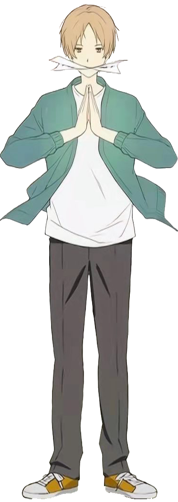
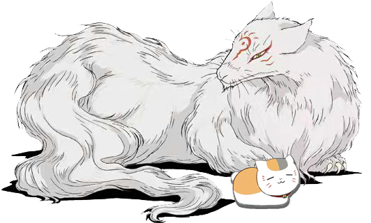
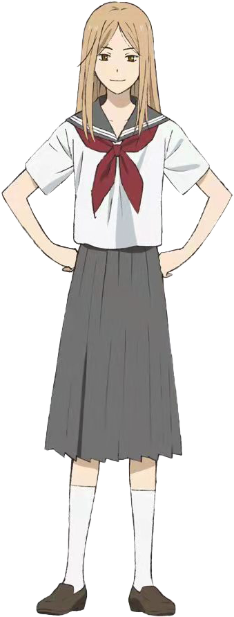
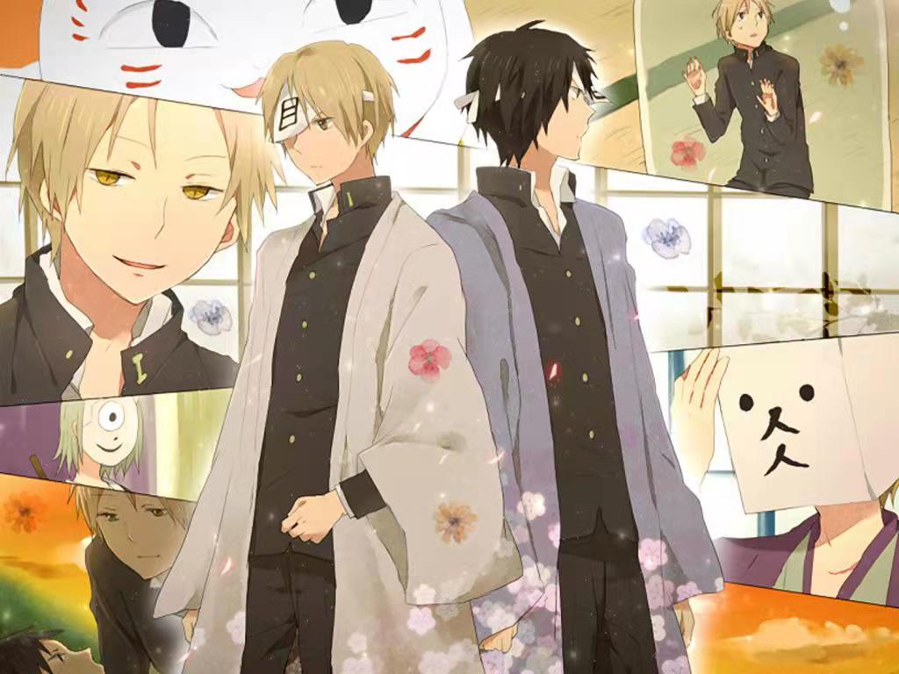
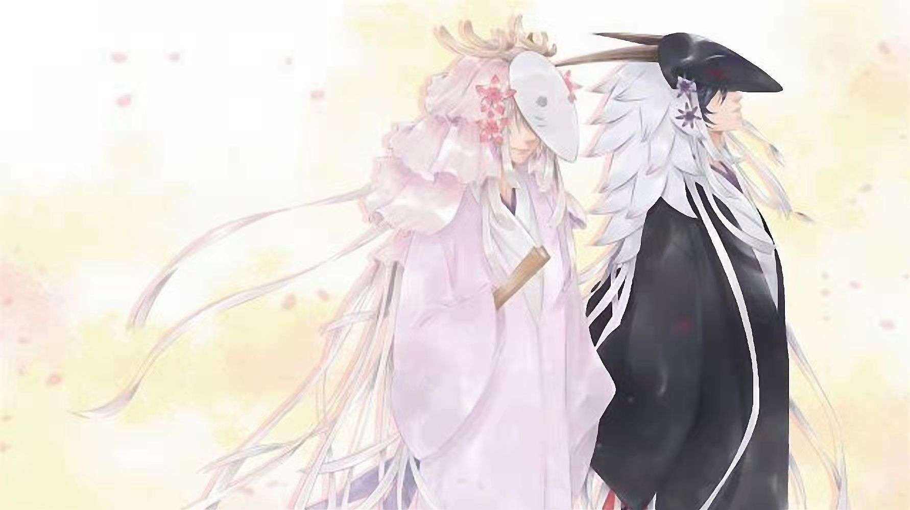
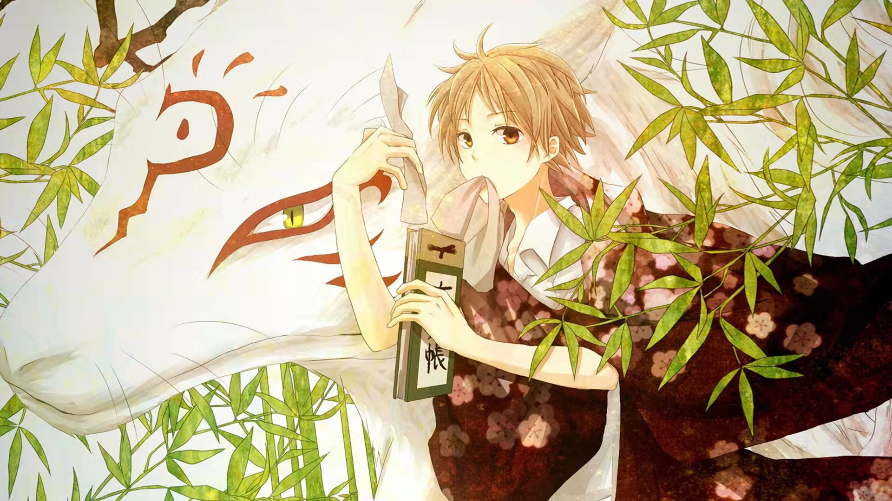
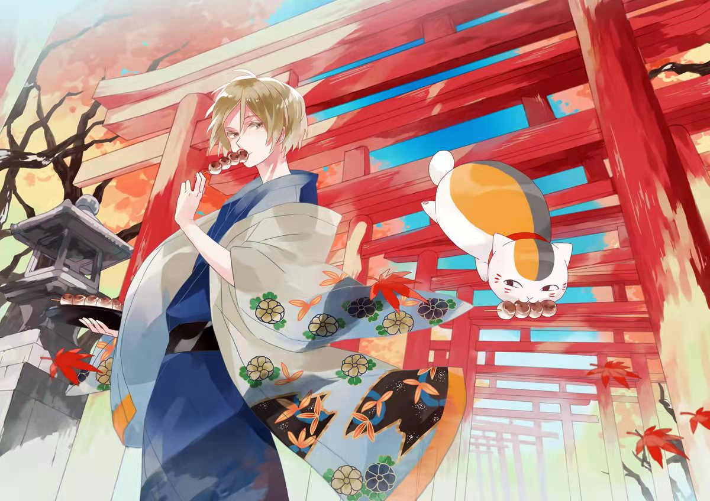
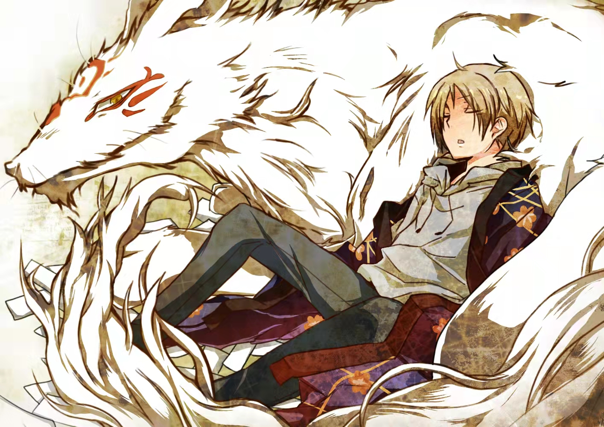

动漫介绍
《夏目友人帐》是漫画家绿川幸著作的漫画。 故事讲述了夏目贵志从外祖母夏目玲子的遗物中得到了那些由契约书所做成的“友人帐”，他决定将友人帐中妖怪们的名字一一归还。
《夏目友人帐》是漫画家绿川幸著作的漫画。 故事讲述了夏目贵志从外祖母夏目玲子的遗物中得到了那些由契约书所做成的“友人帐”，他决定将友人帐中妖怪们的名字一一归还。

夏目贵志
最近感到困扰的是，连小小的离别都会觉得有点寂寞。短暂的相遇跟离别，我想重视所有的刹那。
日本漫画《夏目友人帐》及其衍生作品中的主人公。夏目玲子的孙子，拥有罕见的妖力。父母早年离世，夏目贵志能看到妖怪，使得他被亲戚嫌弃辗转生活于亲戚家之间。虽然被妖怪们误认为是玲子而被追赶，但他和保镖猫咪老师一起过着归还妖怪名字的日子。

猫咪老师/斑
我好歹也是这家伙的保镖，要是你们再次伤害他，那么你们的敌人就不是除妖师，而是我。有种就来挑战我。
本来拥有优美的的外观名为斑的妖怪，被封入招财猫里之后，不知不觉开始习惯招财猫的身体。和夏目约定如果夏目死了就把友人帐送给他，作为夏目的保镖兼家猫和夏目一起生活。

夏目玲子
你的名字挺好听的，既然你成了我的手下，若是我呼唤你的名字，你就要飞奔过来哦。
日本漫画《夏目友人帐》及其衍生作品中的角色。是男主角夏目贵志的外婆，漂亮有气质，基本只在回忆中登场，拥有强大的妖力，智慧和勇气。和斑（猫咪老师）似乎有一段过往。
- 
- 
- 
- 
- 